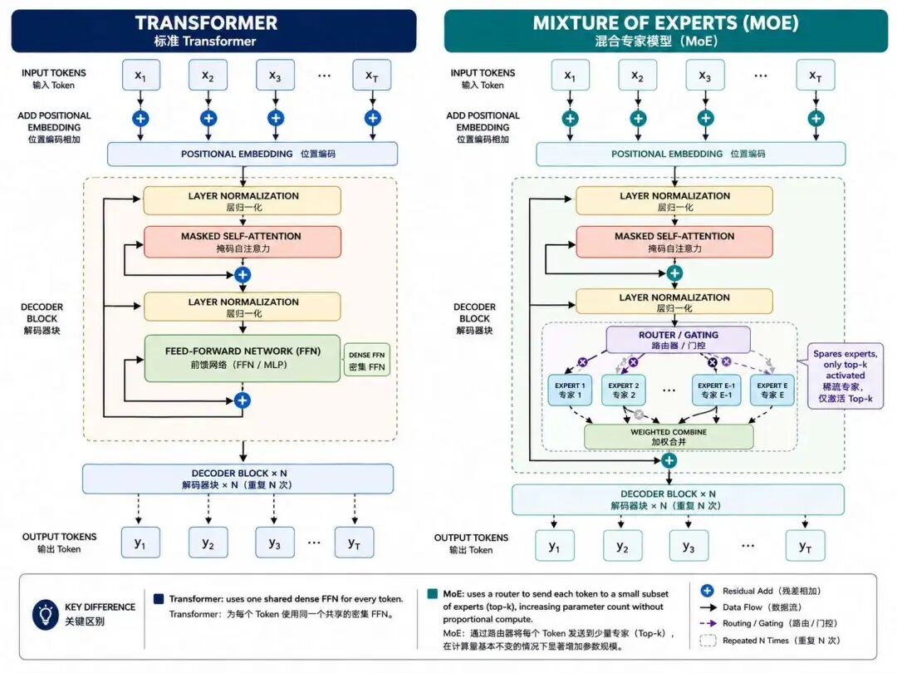
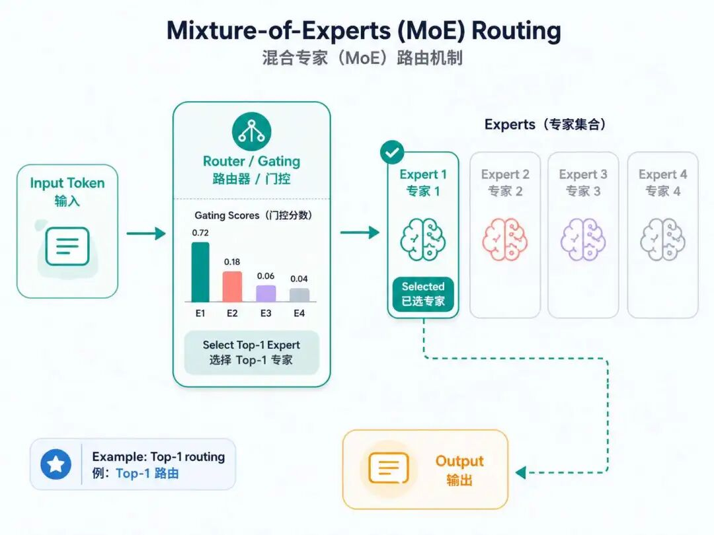
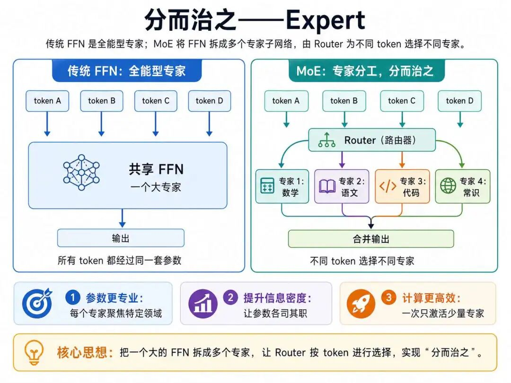
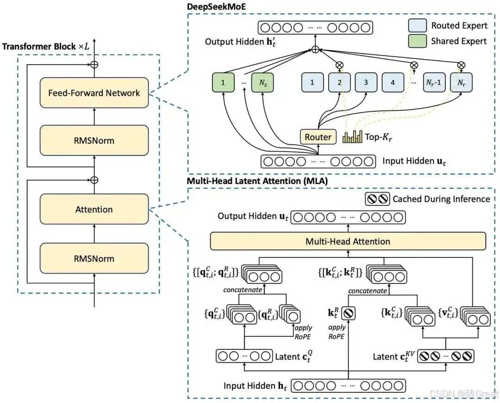
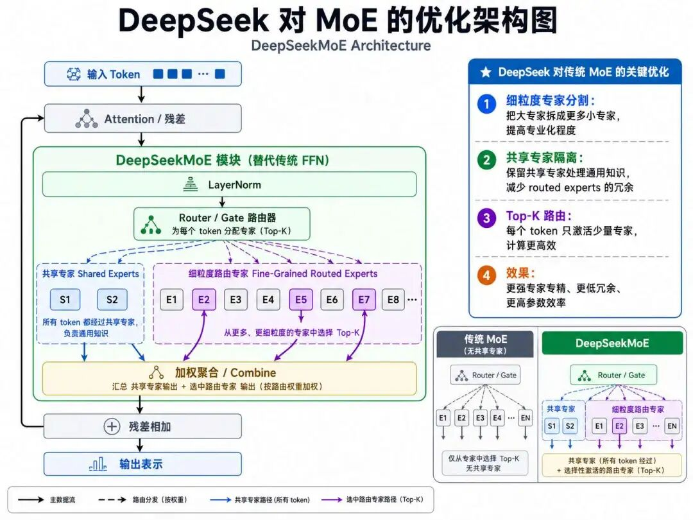

DeepSeek R1 是一款令人印象深刻的模型，尤其是考虑到它们能够以这个价格提供什么。我个人认为我们站在了历史的错误一边，需要找出一个不同的开源战略。--Sam Altman（ChatGPT之父 ）
2025年开年，中国AI企业深度求索（DeepSeek） 发布大模型 DeepSeek-R1，其背后的 DeepSeek-V3 底座模型，以约 2.788M H800 GPU 小时完成正式训练，按每 GPU 小时 2 美元估算，训练成本约 557.6万美元；随后 DeepSeek-R1 在推理能力上进一步出圈，实现媲美GPT-4o的性能，彻底颠覆了行业对"堆算力"的路径依赖。
舆论立刻开始发酵，上线一周即登顶中美苹果应用商店免费榜，覆盖 140个国家 下载榜首，引发国际科技巨头集体震动：
OpenAI CEO 山姆·奥尔特曼公开称赞："新竞争对手令人振奋！"；
微软、亚马逊、谷歌 三大巨头同日宣布接入模型；
英伟达股价单日暴跌 17%，算力封锁战略遭重创。
美国《纽约时报》称此为 "里程碑"，英国《金融时报》直言其 "挑战了AI产业的核心理念"。
在美国芯片禁运压力下，DeepSeek用算法优化弥补硬件短板，成为中国技术突围的典范，《黑神话：悟空》制作人冯骥盛赞"DeepSeek 是国运级别的科技成果，以低成本、开源和联网能力冲击全球AI行业。"
同样作为一个Transformer结构的大模型，DeepSeek强在哪里，为何一经发布就堪称国运级别的科技成功果？以及为何我们跳过其他所有模型，包括llama、Qwen、Mistral等开源模型，直接开讲DeepSeek？
原因并不是说其他模型不重要，而是因为DeepSeek 很适合作为我们理解现代大模型技术演进的"集大成案例"。
从原始 Transformer 到今天的大模型，核心问题一直没有变：模型要更大，推理要更快，训练要更省，长文本要更强，推理能力还要更稳定。而 DeepSeek-V3 / DeepSeek-R1 系列，恰好把这些关键技术路线集中体现了出来。
简单来说，DeepSeek 的强，不是靠某一个单点技术，而是一套组合拳：MoE 负责扩大模型容量但控制计算量，MLA 负责降低长上下文推理时的 KV Cache 压力，RMSNorm 负责稳定大规模训练，MTP 让训练信号更密集，而 DeepSeek-R1 系列中的强化学习流程，则进一步激发了模型的推理能力。
我们可以先用一张表，对 DeepSeek 的关键技术做一个总览：
| 维度 | 原始 Transformer / 传统大模型的问题 | DeepSeek-V3 / DeepSeek-R1 系列的做法 | 带来的效果 |
|---|---|---|---|
| 模型容量 | 参数越大，计算量通常也越大 | 采用 MoE 混合专家架构，DeepSeek-V3 总参数约 671B，但每个 token 只激活约 37B 参数 | 模型容量很大，但实际计算成本可控 |
| FFN 计算 | 传统 FFN 是稠密计算，每个 token 都经过同一套参数 | MoE 将 FFN 拆成多个专家，DeepSeek-V3 中包含 1 个共享专家和 256 个路由专家，每个 token 激活 8 个路由专家 | 减少无效计算，提高参数利用效率 |
| 注意力机制 | 标准多头注意力在长上下文下 KV Cache 压力大 | 使用 MLA 多头潜在注意力，对 Key/Value 进行低秩联合压缩 | 显著降低长上下文推理时的缓存压力 |
| 长文本能力 | 原始 Transformer 受注意力复杂度和缓存开销限制 | 结合 MLA、长上下文扩展和工程优化，支持更长上下文 | 更适合长文档、长对话、复杂推理场景 |
| 训练信号 | 常规自回归训练主要预测下一个 token | DeepSeek-V3 引入 MTP 多 token 预测 | 让模型在训练时获得更密集的未来预测信号 |
| 推理能力 | 传统 SFT 更依赖人工标注和模仿学习 | DeepSeek-R1-Zero 验证纯 RL 可激发推理能力；DeepSeek-R1 进一步结合冷启动数据、多阶段 SFT 和 RL | 数学、代码、逻辑推理能力显著增强 |
| 训练稳定性 | 大规模 MoE 容易出现专家负载不均衡 | 使用无辅助损失负载均衡、节点受限路由等机制 | 在大规模训练中保持更好的稳定性和效率 |
因为deepseek太强了，它开创了许多NLP技术的先河，在极度资源匮乏的情况下，模型的效果直逼OpenAI的闭源模型。我们从以下几方面来看看deepseek为何这么强。
我们之前在学习FNN的时候，有提到过FFN层虽然结构简单，但是这层结构的参数量却占据着整个Transformer参数中的很大一部分。
参数量越多，代表着前向传播的时候参与计算的矩阵也越多，因此计算量就大，这就导致每次训练的时候时间很长，而且这一结构的庞大的参数实际上也不是所有参数都发挥了作用，肯定是存在着冗余的。
FFN 作为 Transformer 的核心组件，其计算是密集且全局激活的--每个输入 token 必须经过这一层的全部参数计算。
在不少大模型中，FFN 参数占比往往超过注意力层，是训练和推理成本中的重要部分。
例如：LLaMA-70B 模型中，FFN 参数占比高达 80%（约 56B/70B），推理时需全部激活；
而 MoE（如 Mixtral 8×7B）通过稀疏激活机制（Top-K 路由），仅激活 2 个专家（占总专家数 8 个的 25%），使每个 token 实际使用的激活参数远少于模型总参数，从而在扩大模型容量的同时控制计算成本。
那么假如可以将这部分冗余且浪费算力的参数也利用起来，模型的效果有没有可能会更好？
但是现有的FNN架构，只有简单的三层：两层线性层中间夹一层Relu激活函数，还有改造的空间吗？
2017年谷歌团队提出了Sparsely-Gated Mixture-of-Experts（稀疏门控混合专家模型），这是大规模稀疏 MoE 架构的重要代表工作之一，这篇论文的核心目的，是通过稀疏激活的方式显著扩大模型容量，同时尽量不让计算量同比例增加，最终这篇论文证明了MoE架构的有效性。

而2023年，由法国Mistral AI团队推出的Mixtral 8×7B横空出世，这是代表性的开源MoE大模型之一，它在多项评测中均领先于参数量远远大于其的Llama 2 70B。
于是MoE架构成为了众多先进开源大模型的重要架构之一，如Mixtral、DeepSeek-V2/V3、Qwen2-MoE、Qwen3-MoE等。
我们来看看这个MoE架构到底长什么样子？为何能使得大模型的效果得到质的提升？

MoE核心主要由路由（Router）和专家（Expert）构成，这两个名字看起来很神秘，其实也很好理解。路由就是起到动态选择专家的作用，而一个一个的专家就是FNN，只不过这个FNN是有"专门"的知识，所以称之为"专家"。
传统FFN更像一个"全能型专家"，所有 token 都要经过同一套参数。MoE 的思路则是把一个大的 FFN 拆成多个专家子网络，再通过 Router（你可以理解为一个路由器） 为不同 token 选择不同专家。
比如专家1专精数学，专家2专精语文，通过这种专家"分工"，使参数聚焦特定领域，提升信息密度，这样就实现了分而治之的作用。

下表是FNN和MoE的比较：
| 组件 | FNN | MoE 中的专家（Expert） |
|---|---|---|
| 结构 | 单一 FFN 层（如：Linear -> ReLU -> Linear） | 多个独立 FFN 子网络（结构与 FNN 相同） |
| 规模 | 固定规模（如隐藏层 14336 维） | 总参数量 = 专家数 × 单个专家参数量（如 8 个专家 -> 总参数量×8） |
| 激活方式 | 100% 参数强制激活 | 仅激活 Top-K 个专家（如 K=2，激活率 ≈25%） |
你可能会在一些文献中看到门控一词，包括我们之前学习LSTM的时候也有提及门控的概念，门控的英文为Gating Network，都是同一个作用，推理的时候负责选择特定的专家。
门控网络输出每个专家的概率得分后，仅保留得分最高的前 K 个专家参与计算，其余专家权重置零，这就是基于Top-K的动态路由。
动态路由的输入来源于自注意力机制和"残差连接+归一化"处理后的输出。
当有 8 个专家时，每个专家的打分过程由门控网络（Router） 完成，核心流程是 "线性变换 -> Top-K筛选 -> Softmax加权"。
以下以包含 8 个专家的 MoE 层为例，逐步说明打分机制（结合 Mixtral 8×7B 等经典模型的设计）：
首先门控网络的路由器权重矩阵 $W$ 的维度（Shape）与专家数量直接相关，其形状为：[输入维度 $d_{model}$ * 专家数量 $N_{experts}$] 。
即若输入向量维度为 $d_{model}$ ，专家数量为8，则 $W$ 的Shape为 ($d_{model}$, 8) 。假设输入向量 x 维度为 1 * 4096 ，专家数量为 8：
1) 线性变换：
$$ scores = x *W -> Shape：(1*4096) × (4096*8) $$输出 8 个专家的原始得分，每个专家一个分数，例如8个专家的分数为：[0.85, -0.15, 1.45, 0.35, 1.05, -0.45, 0.95, 0.35]，最高的为1.45，次高的为1.05。
2) Top-K 选择：
从 8 个得分中选出最高的K个，假设设置K=2，其余设为 -infty 。
结果：topk_scores = [1.45, 1.05], topk_indices = [2, 4]（专家3和专家5）
屏蔽非 Top-K 专家：将未被选中的专家得分设为 -∞：
scores = [ -∞, -∞, 1.45, -∞, 1.05, -∞, -∞, -∞ ]
3) Softmax 加权：
仅对选中的 K 个得分做 Softmax，生成权重概率。
| 专家索引 | 原始得分 | 角色 | 是否选中 | 权重 |
|---|---|---|---|---|
| 专家1 | 0.85 | 名词处理 | ❌ | 0 |
| 专家2 | -0.15 | 数字/日期 | ❌ | 0 |
| 专家3 | 1.45 | 动词处理 | ✅ | 0.60 |
| 专家4 | 0.35 | 时间短语 | ❌ | 0 |
| 专家5 | 1.05 | 动态动作建模 | ✅ | 0.40 |
| 专家6 | -0.45 | 专有名词 | ❌ | 0 |
| 专家7 | 0.95 | 静态关系描述 | ❌ | 0 |
| 专家8 | 0.35 | 逻辑连接词 | ❌ | 0 |
以上是普通MoE的结构和运作机制，而DeepSeek在其基础之上，提出了一些创新机制，在其论文中将其命名为DeepSeekMoE，那么DeepSeekMoE又长什么样子呢？

DeepSeekMoE 作为 DeepSeek-V3 等模型的核心架构，在 MoE（混合专家模型）技术框架上进行了多项突破性创新，与传统 MoE（如 Switch Transformer、GLaM）相比，其在架构设计、计算效率、知识分配和扩展能力上都做了显著优化。
首先是MoE专家架构的优化，传统 MoE（如 Mixtral），所有专家结构相同、功能重叠，易造成知识冗余，每个 token 需激活固定数量专家（如 Top2）。
而DeepSeek-MoE首创 "共享专家 + 任务专家"双轨制，其中共享专家：存储通用知识，如语言、逻辑，所有 token 必经；
而任务专家则专注垂直领域，如数学、代码，按需动态激活。此举显著减少重复参数，提升知识密度与泛化能力。

其次是动态路由机制的优化，传统 MoE依赖简单 Top-K 路由，专家负载不均衡，长序列处理内存开销大。
而DeepSeek-MoE实时监测专家负载，自动避开过载节点，结合无辅助损失均衡策略（Bias 动态调整），训练稳定性远超传统 MoE。
传统MoE通常会引入负载均衡辅助损失，强迫不同专家接收更均匀的 token。但辅助损失太大时，可能会伤害模型本身的表达能力。
DeepSeek-V3 的做法是，在路由分数上加入一个动态调整的偏置项：如果某个专家过载，就降低它后续被选中的概率；
如果某个专家负载不足，就提高它后续被选中的概率。这样既能缓解专家负载不均衡，又尽量减少辅助损失对模型效果的干扰。
DeepSeek-V3 并不是通过丢弃 token 来强行控制负载。
相反，它采用节点受限路由来控制跨节点通信成本，并通过有效的负载均衡策略，在训练和推理阶段都不丢弃 token。
也就是说，即使在大规模专家并行中，它的目标也是让 token 尽量被正常处理，而不是把超出容量的 token 直接丢掉。
传统 MoE通用性强但领域精度不足（如金融、医疗需额外微调）。而DeepSeek-MoE任务专家天然适配垂直领域，在训练过程中逐渐形成一定的专业化分工倾向。
再结合数学、代码等高质量数据、后训练流程和强化学习，模型在数学推理、代码生成等任务上表现更强。
如DeepSeek-Math：数学推理（GSM8K 79 分），DeepSeek-Coder：代码生成（集成语法树解析）
以句子 "我今天非常高兴地收到了一份期待已久的礼物" 为例，假设 MoE 层包含以下专家分工：
到这里，我们就把 DeepSeek 中非常关键的一块技术：MoE 混合专家模型讲清楚了。
简单来说，传统 Transformer 的 FFN 层像一个"全能型模块"，所有 token 都经过同一套参数；
而 MoE 更像一个"专家团队"，由 Router 判断每个 token 应该交给哪些专家处理。
这样一来，模型可以拥有更大的总参数量，但每次只激活一小部分参数，从而在扩大模型能力的同时控制计算成本。
而 DeepSeekMoE 的价值在于，它不是简单地"堆专家"，而是通过共享专家 + 路由专家、无辅助损失负载均衡、节点受限路由等机制，让专家既能分工，又能稳定协作。
所以，DeepSeek 的强不是某一个技术点造成的，而是一整套组合拳的结果：MoE 扩大模型容量，MLA 降低 KV Cache 压力，MTP 增强训练信号，强化学习进一步激发推理能力。
本篇先从 MoE 开始，下一篇我们继续进入 DeepSeek 的另外的关键技术的讲解。
MoE（混合专家模型）：一种把传统 FFN 拆成多个"专家子网络"的结构。它的核心价值不是让模型变小，而是让模型拥有更大的总参数量，同时每次只激活其中一部分专家，从而实现"容量更大、计算可控"。
Router（路由器）：MoE 中负责"分配任务"的模块。每个 token 进入 MoE 层后，Router 会根据当前 token 的隐藏向量，为不同专家打分，再选择得分最高的 Top-K 个专家参与计算。
稀疏激活：指模型虽然拥有很多参数，但每次推理并不会全部使用，而是只激活少数相关参数。MoE 的关键优势就在这里：总参数可以很大，但单个 token 实际参与计算的参数量相对有限。
共享专家与路由专家：DeepSeekMoE 中的重要设计。共享专家负责处理更通用、更高频的知识模式，所有 token 都会经过；路由专家则由 Router 按需选择，用来处理更差异化的模式。这样既能减少重复参数，又能提高专家分工效率。